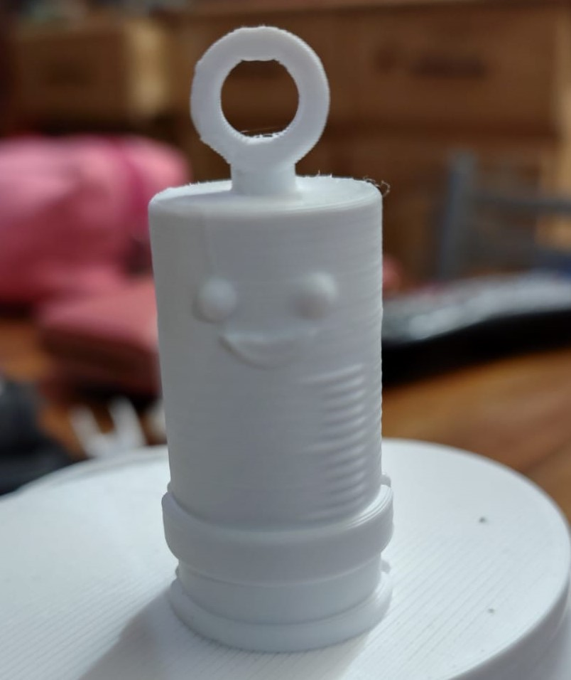
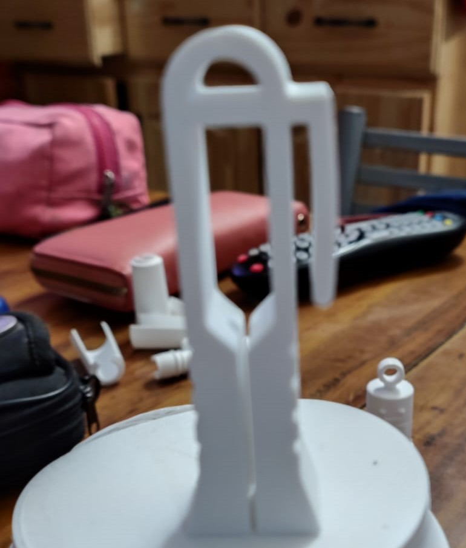
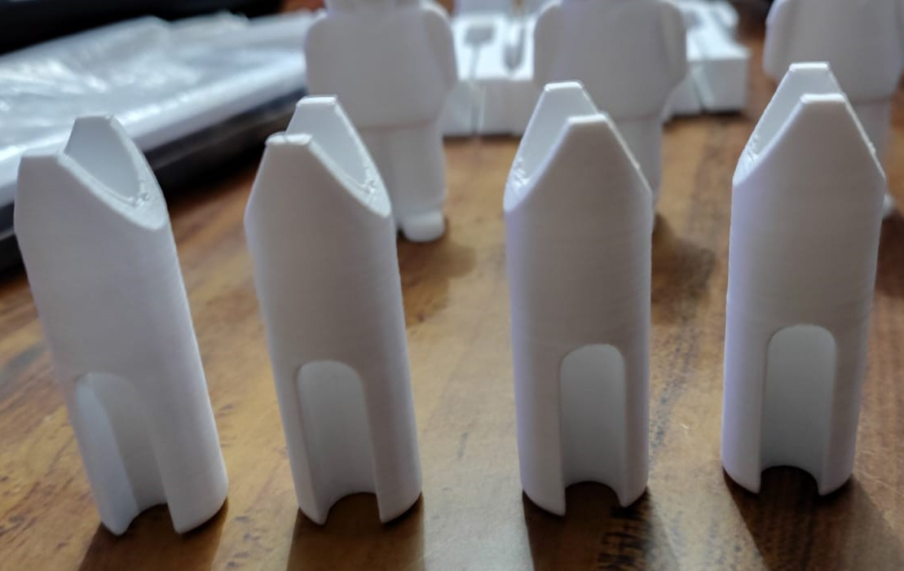
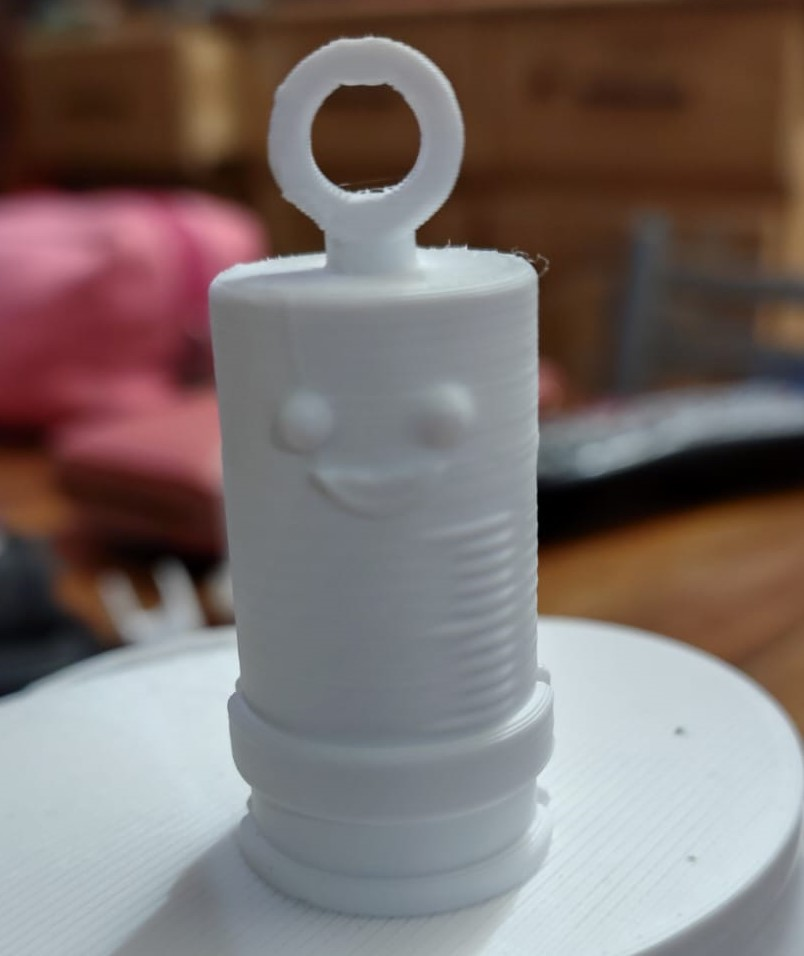
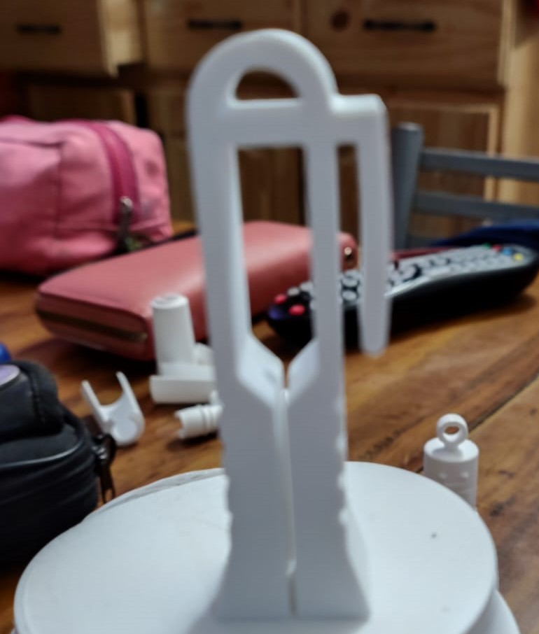
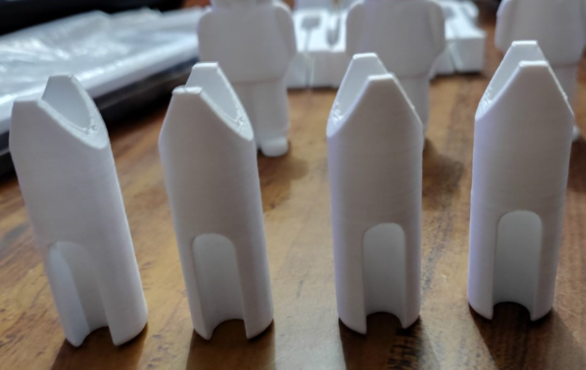

CUIDARTE DIGITAL
¿Qué es?
El abre-ampollas de Cuidarte Digital es un dispositivo ergonómico y reutilizable diseñado para facilitar la apertura de ampollas medicinales de vidrio, evitando accidentes y mejorando la eficiencia tanto en el hogar como en ambientes profesionales de salud.
Beneficios del producto
- ✔️ Reduce el riesgo de cortes o lesiones.
- ✔️ Facilita el uso por parte de profesionales o pacientes.
- ✔️ Evita el desperdicio de medicamentos.
- ✔️ Fabricado en material resistente, liviano y lavable.
- ✔️ Diseño portátil: ideal para llevar como llavero.
Galería de imágenes

 





Contacto
¿Querés recibir más información, muestras o realizar un pedido?
Diego Gallardo - Cuidarte Digital
📞 Teléfono: 342-5133214
📧 Correo: cuidarte.santafe@gmail.com
🌐 Sitio web: próximamente